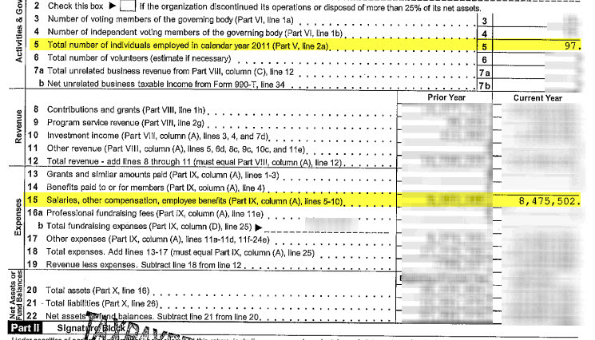
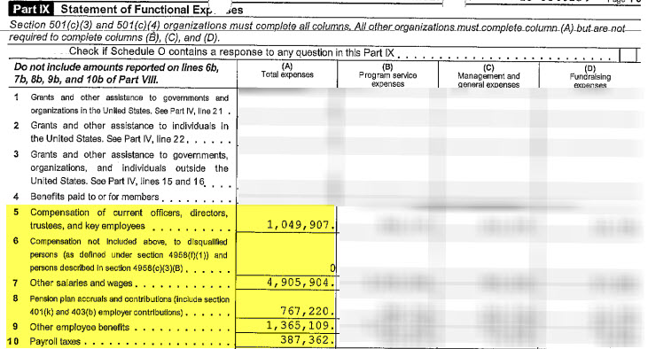
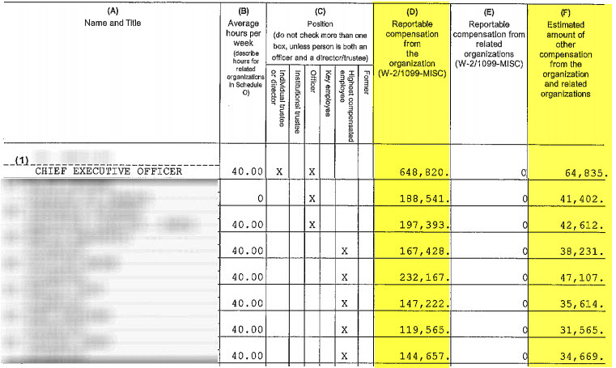
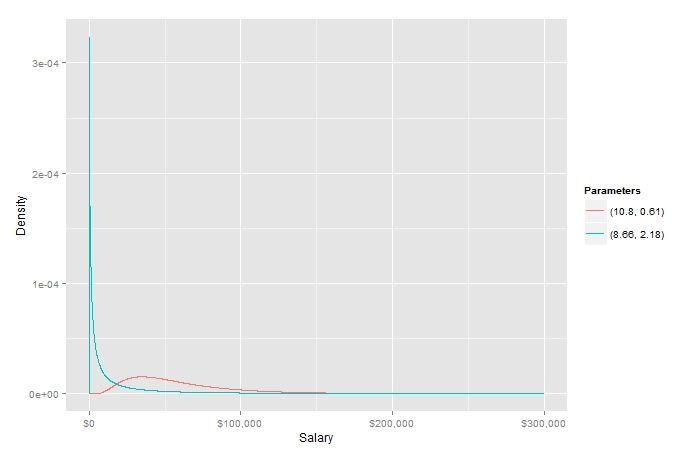
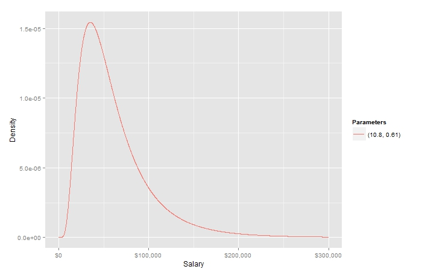
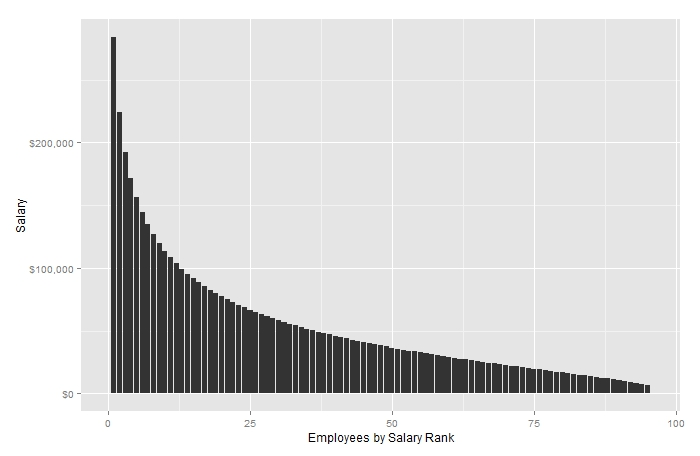
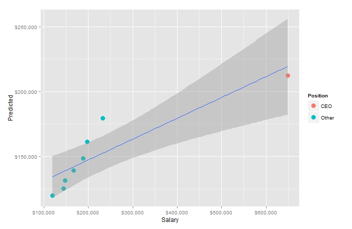
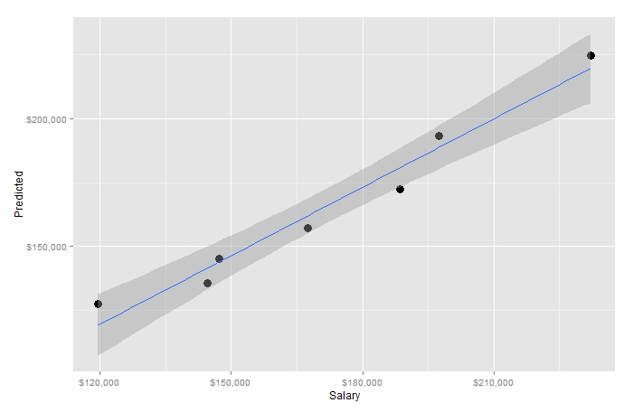

Like public companies, nonprofits have to report lots of information about themselves. We want to see if we can use this information to compute the distribution of salaries among all the firm’s employees.
If you just want code and you’re not here to read, skip to the TL;DR section at the bottom of the post.
Gathering the Data
The IRS requires all nonprofits over a certain size to report their financial information on public documents. These are called form 990s, and they’re full of all sorts of stuff, ranging from basic concepts like total revenues and expenses, down to the nitty-gritty, like how much the highest paid employees make.
While publicly traded companies report the income for top officers, nonprofits report income for top officers and other highly paid employees. This critical distinction allows us to build a more accurate income distribution.
For our analysis, we need three pieces of information:
- The total number of employees
- The total salary paid to employees
- The salaries of the highest paid employees
In the end, we’re going to be able to guess how much each employee at the nonprofit earns. Of course, we won’t actually know who earns what; we’ll just know that the employee with, say, the 20th highest salary probably earns about $x.
For demonstration purposes, I’ve picked a completely random form 990 filed by a medium-sized nonprofit in 2012.
We can get the first two items off the front page of the form. In our example, the data we’re after looks like this:

You can see the “total number of individuals employed in the calendar year 2011” is 97, and the “salaries, other compensation, employee benefits” is $8,475,502.
What does our $8.475 million figure include? The form points us to another section of the 990: “Part IX, column (A), lines 5-10.” Let’s have a look.

Here, we can see the numbers that constitute our total salary figure: they include two sets of compensation figures: about $1.05 million for officers, directors, key employees and about $4.9 million for other salaries and wages. Also included in our figure are pensions, benefits and payroll taxes.
Because we know next to nothing about this nonprofit – Do all employees get healthcare benefits? Pensions? – let’s revise our total salary figure downward to include only our two base compensation figures.
$$ \begin{aligned} \text{Total base salary} &= \\ $1,049,907 + $4,905,904 &= $5,955,811 \\ \end{aligned} $$
We can then compute the average base salary per employee:
$$ \begin{aligned} \text{Average base salary} &= \\ $5,955,811 \div 97 &= $61,400 \\ \end{aligned} $$
Now let’s get the salaries of the highest paid employees. This is generally available deeper in the form. In our case, it’s spread across two different pages. For simplicity, I’ve stitched them together:

I’ve highlighted two columns: (D), which is the “reportable compensation from the organization (W-2/1099-MISC)” and (F), “estimated amount of other compensation from the organization and related organizations.”
For our purposes, we’re only going to look at base salary, which is column (D). If you were doing an analysis that included benefits, you’d also want to consider including column (F).
Determining the Distribution
Now that we’ve got the information we need, we’re ready to do our analysis. Our goal is to determine the distribution of employee salaries at this nonprofit. Once we’ve established a distribution, we can then go on to say things like: 75% of this nonprofit’s employees make less than $x. Or whatever.
You might say, hey, I’ve got the average salary! So I already know that 50% of employees make less than about $61,000, right?
That’s wrong. Just look at the guy with the highest salary: the CEO. He makes nearly $650,000 – more than 10 times the average! So his salary alone must be heavily skewing the numbers.
A Lack of Symmetry
When I think of skewed distributions, I think of the chubby kid on the seesaw. To balance him out, several skinny kids have to pile on the other end. That’s what salary distributions are like: they’re not symmetric about the mean.
This comes up all the time when we talk about the top one percent. A disproportionate amount of wealth (and income) is held by a relatively small group of people.
It’s the same at most companies. In order to balance the CEO’s salary, we know there must be a bunch of employees wedged in beneath $61,000.
What distribution might fit this pattern?
The Log-Normal Distribution
We’ve already disqualified our favorite – the normal distribution – because our data isn’t symmetric. So, what about the log-normal distribution? For a log-normal distribution, the logarithm of the variable is symmetric about the mean.
When you think about the way salaries are structured, this actually makes a lot of sense. If it doesn’t, don’t take my word for it. Here’s a paper arguing that most income distributions are log-normal.
We’ll move forward under the assumption that our salaries are distributed log-normally. They may not be, but this isn’t science. This is a blog post.
Solving Parameters
Another reason we like log-normality is the parameters describing the distribution are pretty and easy to solve. In our case, we only need to know a few basic equations and we can plug in the figures above and presto, we’ll have a nice distribution to show our friends.
The key parameters we’re after here are μ (mu) and σ (sigma). These parameters describe the location and scale of the distribution. Generally – and this is very basic and not rigorous at all – the hump, or bulk of the distribution is described by μ and how far the tail stretches is described by σ.
If you take a look at the Wikipedia article about the log-normal distribution, you can see some basic equations that incorporate μ and σ.
First, we know the mean (which we’ve calculated above to be about $61,000) is related to μ and σ like this:
$$ \text{mean} = e^{\mu + \frac{\sigma^{2}}{2}} $$
Second, since we know the logarithm of our distribution is normally distributed, we know it can be defined like this:
$$ X = e^{\mu + \sigma Z} $$
Where Z is a standard normal variable.
Now, let’s look back at our list of top salaries. We pick out the lowest of the eight, which is $119,565. This is the 8th of 97 elements, so it’s percentile rank is:
$$ 1 - \frac{8}{98} = 0.918367347 $$
It’s trivial to find the z-score that corresponds to that percentile. You can either use a lookup table like this one, or a function like qnorm in R.
$$ qnorm(0.918367347) = 1.394173 $$
So, these calculations leave us with two equations and two unknowns:
$$ \begin{aligned} 61,400 &= e^{\mu + \frac{\sigma^{2}}{2}} \\ 119,565 &= e^{\mu + 1.394173 \sigma} \\ \end{aligned} $$
Taking the log of both equations, we get:
$$ \begin{aligned} log(61,400) &= \mu + \frac{\sigma^{2}}{2} \\ log(119,565) &= \mu + 1.394173 \sigma \\ \end{aligned} $$
Subtracting gives us:
$$ \begin{aligned} (\mu + \frac{\sigma^{2}}{2}) - (\mu + 1.394173 \sigma) &= -0.66645 \end{aligned} $$
Using the quadratic formula, we solve and get:
$$ \sigma = (0.612625, 2.17572) $$
Now, plug these values in above to solve for μ and we get:
$$ \begin{aligned} \mu &= log(119,565) - 1.394173 \sigma \\ &= (10.83751, 8.65829) \\ \end{aligned} $$
So we’ve now derived the parameters for our log-normal distribution:
$$ \begin{aligned} (\mu = 10.83751&, \sigma = 0.612625) \\ (\mu = 8.65829&, \sigma = 2.17572) \\ \end{aligned} $$
Visualizing Results
We’ve got two solutions. Let’s see what they look like.

To my eye, the first set of parameters (the red line) looks much better. It’s a more realistic salary distribution for our nonprofit.

We can use a simple function like R’s qlnorm to see what this looks like. Here are the percentile values for income:
10% $23,212
20% $30,391
30% $36,911
40% $43,578
50% $50,895
60% $59,440
70% $70,177
80% $85,230
90% $111,594
95% $139,412
99% $211,649
Of course, we’re including some pretty serious outliers. The CEO’s salary skews the data. Additionally, the large gap between the 7th and 8th largest salaries is strange. If we toss the top salary and use the second lowest value ($144,657) for our quantile calculation, we get:
10% $12,372
20% $18,154
30% $23,937
40% $30,316
50% $37,808
60% $47,151
70% $59,718
80% $78,739
90% $115,541
95% $158,587
99% $287,248
Plotted, it looks something like this:

Pretty cool, right?
Does It Fit?
How does it fit our known values? If we keep the CEO, we get:

Removing our outlier CEO, we get:

This distribution actually appears to fit the other high-earning employees fairly well.
TL;DR - The Code
Okay, okay: here’s an R script I hacked together that performs these calculations for you.
# Function returns estimated salaries given total salary, number of employees
# and top salaries.
GetSalaries <- function(TotalSalary, Employees, TopSalaries) {
Z <- qnorm(1 - length(TopSalaries) / (employees + 1))
AvgSalary <- TotalSalary / Employees
# Warning: massive assumptions here!
# We're simply assuming all solutions are real and, worse,
# that the smallest sigma is correct. If you get crazy results,
# this is probably why.
sigmas <- Re(polyroot(c(-(log(min(TopSalaries)) - log(AvgSalary)), Z, -1/2)))
sigma <- min(sigmas)
meanlog <- log(min(TopSalaries)) - Z * sigma
data.frame(
Employee = 1:Employees,
Salary = qlnorm(1 - (1:Employees) / (Employees + 1), meanlog, sigma)
)
}
# And, our first example:
TotalSalary <- 5955811
Employees <- 97
TopSalaries <- c(648820, 188541, 197393, 167428, 232167, 147222, 119565, 144657)
GetSalaries(TotalSalary, Employees, TopSalaries)
# Stripping outliers:
TotalSalary <- 5955811 - 648820 # Subtracting the CEO's large salary
Employees <- 96 # Reducing our employee count by one
# Remove both the CEO's high salary and the lowest high salary.
TopSalaries <- c(188541, 197393, 167428, 232167, 147222, 144657)
GetSalaries(TotalSalary, Employees, TopSalaries)
Tip of the Hat
Thanks to Serge for helping me with this.
Edits
8/5/2013: Removed errant parenthesis; added trendline to first fit-plot.
Disclaimer
Standard disclaimer: This is just my personal ramblings. If you see a mistake – or if you know a better way – please get in touch and let me know.